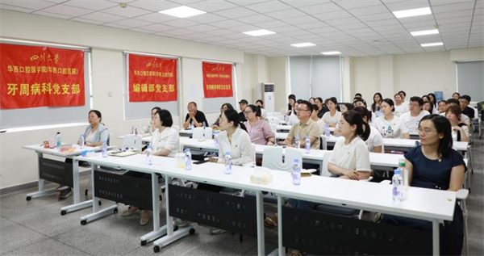

学院通知 · 科研创新
我院牙周病科党支部、编辑部党支部、牙周病学研究生党支部联合开展树立和践行正确政绩观学习教育主题党日活动
发布时间：2026/07/08
为深入贯彻落实树立和践行正确政绩观学习教育工作要求，提升党员师生职工科研素养，6月30日，我院牙周病科党支部、编辑部党支部、牙周病学研究生党支部联合开展树立和践行正确政绩观学习教育主题党日活动，聚焦科研论文写作与投稿规范，为支部党员搭建专业化的学习交流平台。 活动中，编辑部党支部书记杨惠同志带领全体支部党员学习树立和践行正确政绩观相关重要论述，围绕党员科研工作者的价值追求开展深入研讨。结合理论学习，编辑部党支部书记杨惠同志、编辑部党员李彩同志立足岗位开展经验分享，分别就稿件撰写优化、投稿学术诚信与科研伦理作出简要讲解，提醒全体党员树牢正确政绩观，严守学术红线，规范科研成果发表全流程。在互动交流环节，党员师生围绕论文选题凝练、审稿意见回复等重难点问题进行了深入探讨。编辑部党员同志结合真实案例逐一答疑解惑，引导大家以校准科研心态、摒弃功利浮躁，现场学习氛围浓厚热烈。 本次主题党日活动将党建思想教育与科研能力培养深度融合，以学促行、以行践知，扎实推进正确政绩观学习教育落地见效。与会党员表示，将自觉践行正确政绩观，坚守求真务实、严谨治学的优良作风，立足本职精进业务、深耕科研，以高质量党建推进学科建设与科研创新。 标签：
